Hermes-Agent
由 Nous Research 开发的开源 AI Agent，部署于公司内网供全员使用
什么是 Hermes-Agent？
Hermes-Agent 是由 Nous Research 开发的开源 AI Agent（MIT 协议），具备自主学习与技能积累能力。公司已将其部署在内网环境，通过浏览器即可访问，帮助全员完成文档撰写、信息整理、数据分析等日常办公任务。
核心定位
面向全员的AI助手 — 不只是技术人员能用，产品、运营、管理、HR等所有岗位都能从中受益。无需编程知识，像聊天一样使用AI。
演示视频
通过一段实际操作演示，快速了解 Hermes-Agent 的核心使用方式。
核心功能
Hermes-Agent 覆盖日常办公的核心场景，以下是最常用的四个方向。
周报/日报撰写
提供工作要点即可快速生成结构清晰的项目周报，支持按部门/项目维度汇总，自动匹配公司汇报模板风格。
会议纪要整理
粘贴会议记录或要点，AI自动整理为规范纪要，提取关键决议、待办事项和责任人，生成清晰的行动清单。
业务分析报告
输入业务数据或指标，AI生成包含趋势分析、问题诊断、改进建议的完整分析报告，支持数据可视化描述。
项目汇报材料
输入项目进展和关键节点，自动生成向管理层汇报的PPT大纲或书面汇报材料，突出成果和风险。
运维脚本生成
描述运维需求（如批量文件处理、日志清理、服务巡检），AI自动生成Bash/PowerShell/Python脚本，减少手工操作。
故障排查辅助
粘贴错误日志或故障现象，AI快速分析可能原因，给出排查步骤和解决方案，缩短故障恢复时间。
日志分析与审计
上传系统日志，AI帮你快速筛选关键事件、发现异常模式、生成审计摘要，提升日常巡检效率。
配置管理文档
整理服务器配置、网络拓扑、权限清单等信息，自动生成标准化的运维配置文档，便于交接和审计。
合同起草辅助
描述业务需求和合作条件，AI生成合同初稿框架，包含标准条款和风险提示，大幅缩短起草周期。
条款审查分析
上传合同文本，AI标注关键条款、潜在风险点和不平等的权利义务，辅助法务和商务人员快速审阅。
合规检查清单
根据合同类型自动生成合规检查要点清单，逐项核对确保合同符合公司政策和法规要求。
合同与采购文件比对
上传采购文件和合同文本，AI自动逐项比对条款与采购需求是否对齐，标识不一致项、遗漏项和新增条款，辅助判断合同是否满足采购要求。
公文/制度文件
输入制度要点和管理意图，AI生成符合公文规范的通知、制度、管理办法等正式文件，格式规范用语得体。
邮件与沟通函
说明沟通目的和收件对象，AI生成中英文商务邮件、内部通知、协作沟通函，语气得体层次分明。
方案与汇报PPT
输入项目背景和目标，AI生成完整的方案文档和汇报PPT大纲，包含背景分析、实施方案、预算预估等模块。
文档润色校对
对已有文档进行语言润色、格式统一、逻辑检查，消除语法错误和表达不当，让交付成果更专业。
Hermes-Agent 架构概览
了解 Hermes-Agent 的核心架构组件，有助于更好地理解其能力边界和工作原理。
Hermes-Agent 遵循经典的自主 Agent 循环：感知用户输入与上下文 → 思考并制定执行计划 → 调用工具执行操作 → 观察结果并决定下一步。这个循环持续迭代直到任务完成，每次迭代的上下文都会被保留，形成完整的推理链路。
支持接入多种 LLM 后端：OpenAI、Anthropic Claude、Nous Portal、OpenRouter（200+ 模型）、NVIDIA NIM、Moonshot、MiniMax 等。通过 hermes model 命令即可切换，无需修改代码，实现模型与业务逻辑的解耦。
Skills 是 Hermes-Agent 的核心能力扩展机制，也是其区别于其他 AI Agent 的关键特性。
什么是 Skill？每个 Skill 是一个独立的领域知识包，遵循 agentskills.io 开放标准。一个 Skill 内部包含：
- 领域指令（Instructions）：告诉 Agent 在这个领域中应如何思维和操作
- 专用工具脚本：Python/Shell 脚本，执行特定领域操作（如提取 PDF 表格、生成 ASCII 艺术）
- 参考文档：领域知识参考，供 Agent 在任务中查阅
- 模板文件：如 PPTX/DOCX 模板、LaTeX 模板等
Skill 的自主学习闭环：Hermes-Agent 在完成复杂任务后，能够自动分析任务过程，提取可复用的知识和方法，自主创建新的 Skill 存入 Skills 库。后续遇到类似任务时，该 Skill 被自动激活，Agent 的表现会逐步提升。使用越久，积累越多，能力越强。
内置 Skills 覆盖领域：代码开发（TDD、代码审查、架构设计）、创意设计（ASCII 艺术、漫画生成、品牌指南）、办公自动化（文档处理、演示文稿、数据分析）、研究辅助（论文写作、arXiv 检索）等 30+ 个领域。
支持两种开放协议，让 Hermes-Agent 能够接入外部世界：
MCP（Model Context Protocol）：AI 应用的"USB-C 接口"。通过 MCP Server 接入外部工具与数据源——文件系统、数据库、浏览器、Git 仓库、Slack 等。MCP Server 可复用，社区已有大量预构建的 Server 可直接安装使用。
ACP（Agent Communication Protocol）：Agent 间的"对话协议"。允许不同 Agent 之间进行结构化的通信与协作，实现多 Agent 系统的协同工作。
| 维度 | Skills（技能） | MCP（协议工具） |
|---|---|---|
| 核心定位 | 领域知识 + 操作流程 | 外部工具 + 数据接口 |
| 解决的问题 | "怎么做"——告诉 Agent 完成某类任务的方法论和最佳实践 | "用什么"——为 Agent 提供调用外部系统的标准化接口 |
| 内容形式 | 指令文档、脚本、模板、参考资料 | API 定义、Tool 描述、Resource 和 Prompt 模板 |
| 运行位置 | 加载到 Agent 的上下文窗口，融入推理过程 | 独立进程，Agent 通过协议调用，工具在外部执行 |
| 典型例子 | "如何撰写一份合规的采购合同"的完整方法指导 | "读取公司合同数据库中的历史合同"的数据接口 |
| 学习能力 | Agent 可从任务中自主创建和改进 Skill | MCP Server 须人工开发，工具能力固定 |
简言之：Skill 教 Agent "怎么做"，MCP 给 Agent "用什么"。一个优秀 Agent 需要两者配合——MCP 提供工具能力，Skills 用领域知识指导工具的正确使用方式。
Hermes-Agent 具备多层记忆机制：会话记忆在单次对话中保持上下文连贯；持久记忆将关键信息存入向量数据库（支持 Honcho、Mem0 等多种后端），实现跨会话的知识积累；周期性提醒（nudge）让 Agent 主动归档和反思，构建对用户的长期理解模型。
支持派生隔离的子代理（Subagent）并行处理独立任务。每个子代理拥有独立的上下文窗口和工具权限，主代理负责任务拆解、分发和结果汇总。这使得复杂多步骤任务可以并行执行，大幅提升效率。
Hermes-Agent 不绑定单一运行环境。支持本地终端、Docker 容器、SSH 远程、Modal/Daytona 无服务器等 7 种后端。无服务器后端可在 Agent 空闲时自动休眠，按需唤醒，几乎不产生闲置成本。
环境准备
Hermes-Agent 需要 Python 环境（必须Python3.11及以上版本），请先完成以下步骤。
1. 安装 Python
通过公司应用商店搜索并安装 Python：
- 登录应用商店：
http://7.24.4.123/Matrix/ - 搜索 Python
- 点击安装链接安装 Python
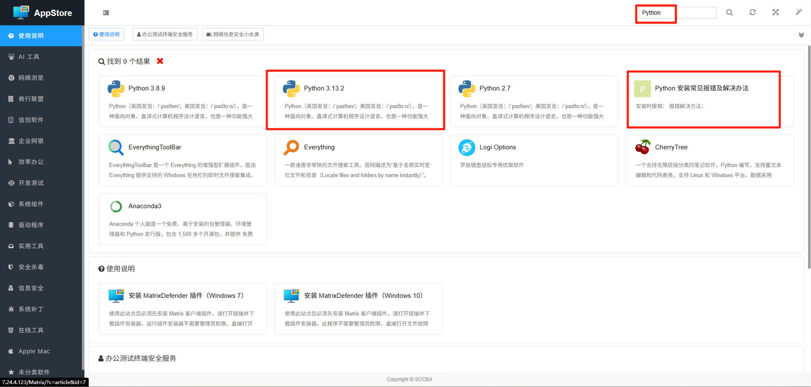
2. 点击安装
在搜索结果中找到 Python，点击安装链接，按提示完成安装。安装时勾选「Add Python to PATH」选项（如有）。
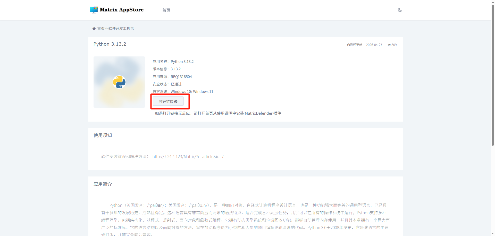
3. 安装 Hermes-Agent
Python 安装完成后，打开终端（CMD 或 PowerShell），复制以下脚本一键完成 pip 源配置和 hermes-agent 安装：
脚本自动配置 pip 源 + 安装，一步到位。
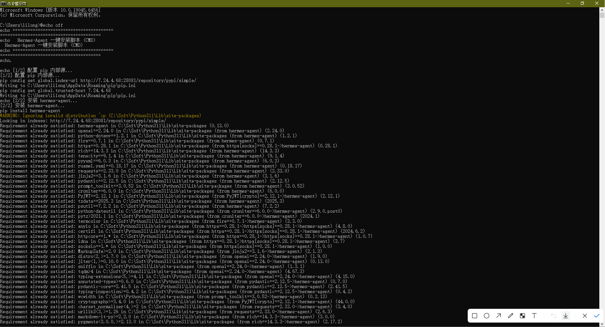
⚡ 一键安装命令
Python 安装完成后，选择你的终端类型，点击复制按钮，粘贴到终端执行即可。脚本会自动配置公司内部 pip 源并安装 hermes-agent。
选择你的终端类型，点击右上角按钮复制脚本：
http://7.24.4.68:28081/repository/pypi/simple/），无需手动修改 pip.conf。如果之前已配置过其他源，此操作会覆盖。 安装官方内置 Skills
Skills 是 Hermes-Agent 的核心能力扩展，提供文档处理、代码开发、创意设计等各领域的专业技能。安装完 Hermes-Agent 后，建议立即配置官方 Skills。
-
首次运行 Hermes-Agent
安装完成后，在终端中运行
hermes-agent命令启动一次，系统会在你的用户目录下自动生成.hermes配置目录（目录中包含skills子目录）。目录位置 Windows:C:\Users\你的用户名\.hermes\skills\| macOS/Linux:~/.hermes/skills/ -
下载并解压 Skills 压缩包
下载本培训提供的 skills.zip 官方技能包，解压得到
skills文件夹。 -
覆盖到 .hermes 目录
将解压后的
skills文件夹中的所有内容，覆盖到用户目录下.hermes/skills/目录中。覆盖后重启 Hermes-Agent 即可生效。
Skills 包含哪些能力？
官方 Skills 包涵盖丰富的能力模块，包括但不限于：
- 代码调试（TDD / Debug）
- 代码审查
- 架构设计
- 技术方案(Spike)
- ASCII 艺术/视频
- 架构图绘制
- 漫画生成
- 品牌指南设计
- 文档处理
- 演示文稿
- 数据分析
- Slack/Gmail 集成
配置模型
安装完成后，需要通过 hermes setup 命令配置模型信息，Hermes-Agent 才能正常连接 AI 服务。请提前准备好以下信息：
🔑 需要提前准备
从 AI Gateway 平台申请的密钥，用于验证身份。尚未申请？请参考 API Key 申请指南。
AI 服务的访问地址，格式如 http://7.24.28.9:28080/v1（请以实际分配地址为准）。
本次使用的模型名称。Desktop 桌面端推荐使用 Qwen3.6-35B-A3B，在性能和效果上有较好平衡。
1. 执行 hermes setup 命令
打开终端（CMD 或 PowerShell），执行以下命令启动配置向导：
进入配置界面后，会看到一个选项列表。不要选择默认的选项 1（Quick Setup — Nous Portal OAuth），请选择最下方的自定义端点选项（编号可能因版本略有不同，图中选择的是选项 2）。
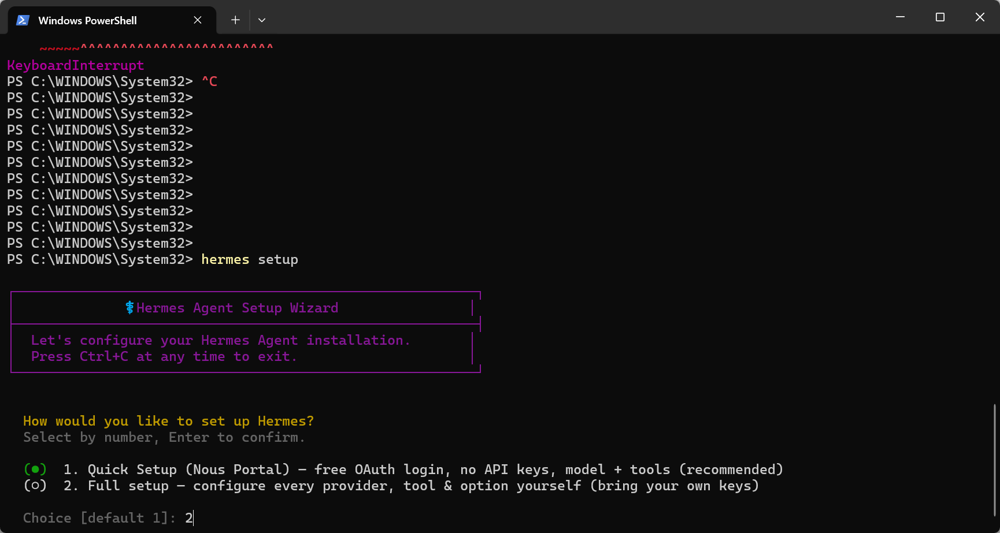
2. 选择模型供应商
进入模型供应商列表，请选择 30 对应的「自定义端点（Custom Endpoint）」选项。不同版本编号可能有差异，请认准 Custom Endpoint 这一项。
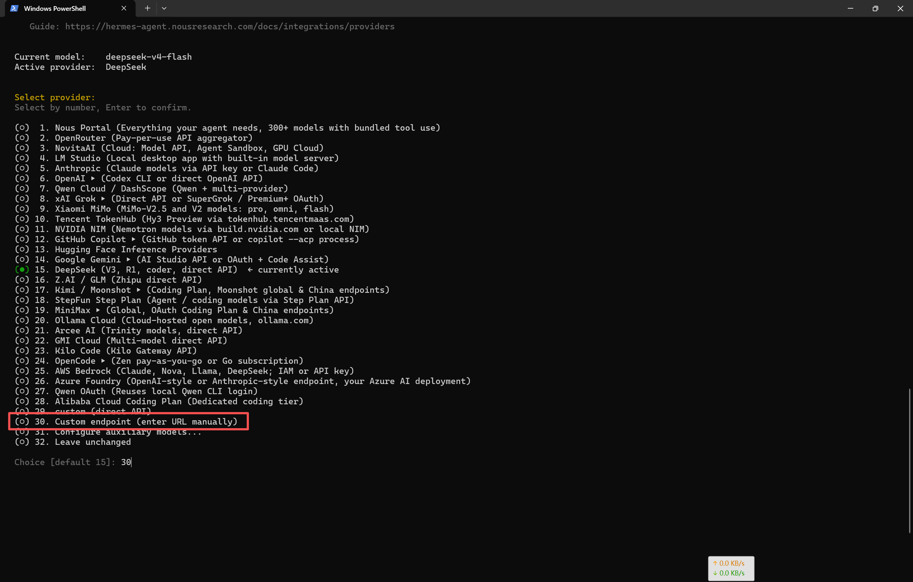
3. 填入配置信息
根据提示依次填入以下三项信息：
- Base URL — AI 服务的接口地址
- API Key — 从 AI Gateway 申请的密钥
- Model Name — 模型名称，推荐使用 Qwen3.6-35B-A3B
全部填写完成后，配置即保存成功，可以正常使用 Hermes-Agent 了。
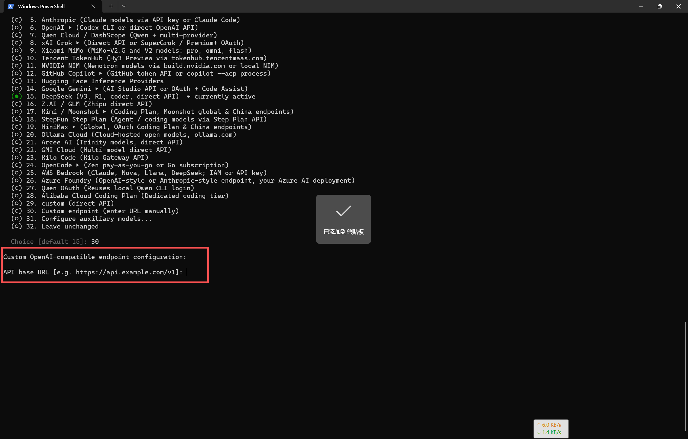
Hermes Desktop 桌面端安装
Hermes Desktop 是 Hermes-Agent 的图形界面版本，提供更直观的聊天交互体验。安装前请确保已完成上述环境准备和模型配置步骤。
⚠️ 系统兼容性说明
Hermes Desktop 仅在 Windows 10 和 Windows 11 上做了完整验证，其他操作系统暂不支持，请勿在其他系统上尝试安装。
-
升级 hermes-agent 到最新版本
打开终端（CMD 或 PowerShell），执行以下命令将 hermes-agent 升级到完整版本（包含桌面端所需的全部依赖）：
pip install -U hermes-agent[all]注意 如果环境准备步骤中已安装hermes-agent，此处需要升级到完整版本。[all]参数会安装桌面端所需的额外依赖（如 GUI 框架、WebView 绑定等）。 -
安装 WebView2 运行时
Hermes Desktop 依赖 Microsoft Edge WebView2 运行时来渲染界面。点击下方按钮下载安装包，下载后双击运行即可自动完成安装。
提示 如果系统已安装 Microsoft Edge 浏览器，WebView2 运行时可能已存在。不确定时可先运行安装程序，它会自动检测并提示"已安装"或跳过。 -
下载并解压 Hermes Desktop 压缩包
下载本培训提供的 hermes-desktop.zip 桌面端压缩包（包含编译好的 Hermes Desktop 程序），将其解压到以下目录：
C:\Users\你的域账号\AppData\Local\解压后的目录结构应为
C:\Users\你的域账号\AppData\Local\hermes，其中包含hermes-agent子文件夹及完整的桌面端程序文件。 -
覆盖配置文件
将之前配置好的
config.yaml复制并覆盖到桌面端目录中：源文件路径（原 hermes-agent 配置）：
C:\Users\你的域账号\.hermes\config.yaml目标路径（桌面端目录）：
C:\Users\你的域账号\AppData\Local\hermes\config.yaml为什么需要覆盖？config.yaml中包含了你的 API Key、模型选择、接口地址等关键设置。桌面端需要读取这些配置才能正常连接 AI 服务。覆盖后桌面端的配置与你已配置好的终端版完全一致。 -
启动 Hermes Desktop
进入以下目录，双击运行 Hermes.exe：
C:\Users\你的域账号\AppData\Local\hermes\hermes-agent\apps\desktop\release\win-unpacked\Hermes.exe建议右键点击
Hermes.exe→ 发送到 → 桌面快捷方式，方便日后快速启动。 -
安装后检查
首次启动时如果弹出错误提示窗口，请点击窗口上的 "修复"（Repair） 按钮，系统会自动修复依赖问题。修复完成后重新启动 Hermes Desktop 即可正常使用。
✓ 验证安装
启动成功后，你应该能看到 Hermes Desktop 的聊天窗口。尝试输入一个问题，确认 AI 能正常回复。如果提示"模型未配置"或"API Key 无效"，请检查 config.yaml 是否已正确覆盖，以及 API Key 是否有效。
提示 可以将桌面端快捷方式固定到任务栏或开始菜单，方便日常使用。Hermes Desktop 和终端版hermes-agent使用同一份配置，配置更新后桌面端无需重复设置。
使用 Hermes-Agent
安装完成后，即可开始体验 Hermes-Agent 的智能助手功能。
1. 启动 Hermes-Agent
在终端中输入 hermes-agent 命令启动交互界面，按照提示操作即可。
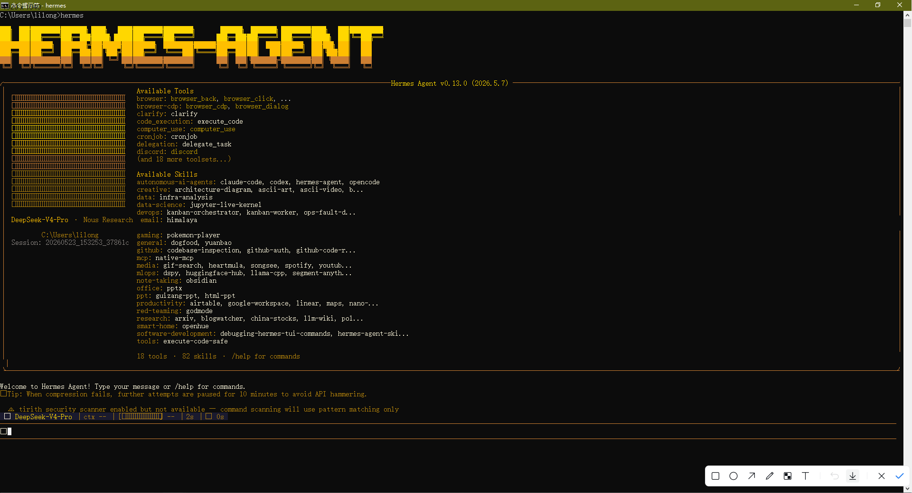
2. 发起对话
在对话框输入你的问题或任务描述。提示技巧：目标越明确，AI的回答质量越高。
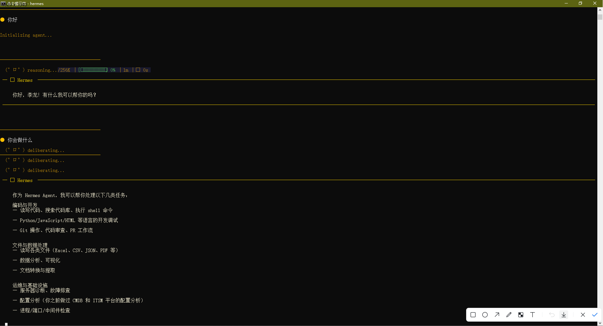
3. 优化迭代 — 多轮对话示例
根据AI的回复进行追问或调整，多轮交互不断完善结果。以下展示一个完整的多轮对话流程：从提出需求到生成最终报告。
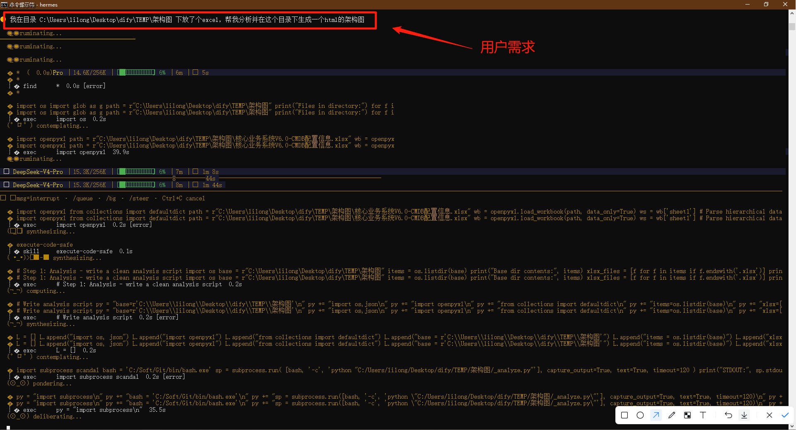
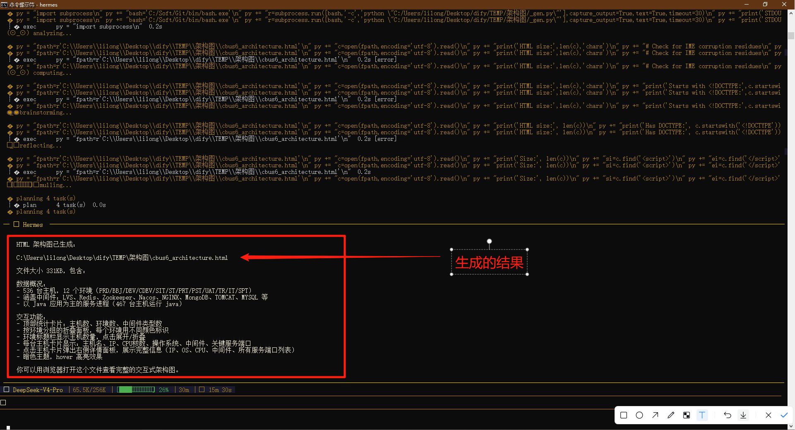
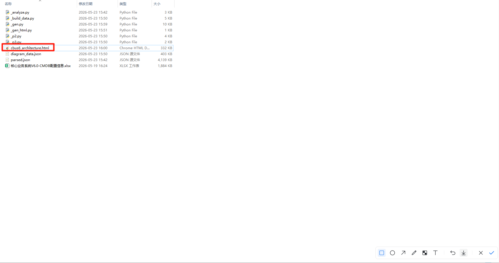
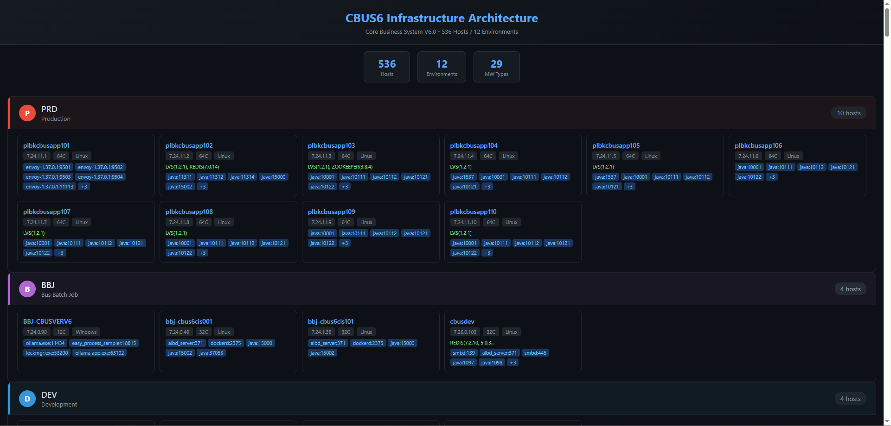
使用建议与注意事项
好的提示包含四个要素：
角色 — 告诉AI它扮演什么角色（如"你是一位资深产品经理"）
任务 — 清晰描述需要完成什么
约束 — 字数、格式、风格等具体要求
示例 — 给出期望的样例供AI参考（可选但效果好）
建议将AI生成内容作为初稿或参考，在此基础上进行人工审核和调整。特别是涉及数据准确性、合规性、对外发布的内容，务必人工把关。
请勿输入公司机密信息、个人敏感数据（身份证号、银行卡号等）、未公开的商业计划。遵循公司信息安全规范，保护数据安全。
可以指出问题并要求AI修正。提供更多上下文或约束条件，或者尝试换个角度提问。AI是辅助工具，需要人的判断来评估结果的准确性。
运维实战场景
以下场景贴近运维日常工作，展示 Hermes-Agent 如何在实际业务中发挥作用。
服务器巡检报告
将服务器巡检数据（CPU、内存、磁盘、进程列表等）直接粘贴给 Hermes，让它帮你分析指标异常、发现潜在风险，并自动生成巡检报告。支持一次粘贴多台服务器的数据，横向对比分析。
故障排查辅助
遇到故障报错时，将错误日志或报错截图发给 Hermes，快速获取故障原因分析和排查建议。如"这条 ERROR 日志是什么意思？我该检查哪些地方？"
运维脚本生成
描述你的需求（如"写一个批量检查多台服务器 SSH 连通性的脚本"），Hermes 会生成对应的 Shell/Python 脚本。还可要求它解释脚本的每一步逻辑，帮助你理解和使用。
变更公告起草
将变更内容简要描述输入，让 Hermes 帮你起草正式的变更通知或公告。可指定受众（领导/同事/全员）、语气（正式/简明）和格式要求，快速生成专业文档。
延伸阅读
以下教程可帮助你深入了解 Hermes-Agent 的更多功能与最佳实践。